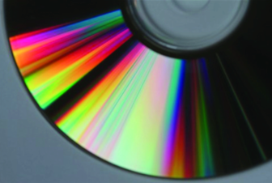

In this project, we are going to implement the effects of iridescence due to the wave nature of light. When light rays get reflected from the surface, they tend to interfere with each other because of different wavelengths, exhibiting many colorful patterns on the surface. We are going to approximate this real-life situation by keeping track of the azimuthal angles, wavelengths, and phases of the lgihts. Furthermore, we would like to extend the effects of iridescence to more anisotropic BRDFs and other scenes we have implemented in previous projects.
|

|
Reflection models in project 3-1 and 3-2 ignored the wavelike effects of natural light. When we have surfaces with small-scale details such as CDs, these details will cause the reflected waves to interfere with one another. This phenomenon is known as diffraction. Different azimuthal angels will affect the diffraction patterns.
We will be implementing the anisotropic BSFR to simulate a "rough" surface to produce inference patterns base off the azimuthal angles. Then we will be calculating the wavelength of the reflected lights and interference pattern. Finally, we will use the fragment shader to convert wavelength to RGB color and display the final image.
In general, there are two approaches. The first one is we can start with the pathtracer code from project 3-1 and 3-2 and modify it to incorporate the anisotropic BRDF and extra terms(phases, wavelengths, etc) in the ray tracing process. Or we can also extend project 4 to accommodate the new BRDF and ray equations. In the end, we will need to update the code to incorporate the microfacet model we used in project 3. We will try both ways and see which works the best for us.
Either way, We have set up the following goals for this project:
Analysis the light interactions with rough surfaces using optic physics.
Calculate the reflected rays with shaders or pathtracer from previous projects.
Map wavelengths into different colors and render.
Sum results we got previsouly with Ansotropic lighting to produce a better Iridescent effects.
The ideal result here is a live demo iridescent CD. User can drag the CD or enter a different azimuthal angle to get a different color on the effects.
(We anticipate this to be the most difficult part of the project)
Unlike CDs, soap bubbles exhibit thin-film interference patterns, which occurs when one or more very thin transparent coatings or films are placed on top of a material. The lights will reflects and refracts multiple times inside the films and interference with themselves in the process.
Multiple layers flim coating simulation can be computational expensive.We need to start off one-lay film coating shader and then extend it to multiple layers if possible.
Giving the phase, wavelength, and magnitude of the light, we need to derive an expression for complex reflectance and transmission terms that properly track changes in phase, then replace the Fresnel term in the BRDF with the new expression.
Our main goal here, is also to have a live demo showing soap bubbles' iridescent effects with different refraction index and film thicknesses. In addition, the coating film is fluid and therefore can freely move around the bubble surface. Flowing flim can cause a change in temporal thickness. A higher aim of this project is to address this effects.
In this part, we will be mainly making changes to the .dea files(dragons, spheres, etc) we used in project 3 to showcase how their diffraction patterns look like under different coating flims.
We might need to modified the BRDFs heavily to incorporate the code we wrote above.
The goal here is to iridescent effects for the BRDFs we used in project 3.
(If we are not exhausted when we get here) We will be exploring many complicated objects(irregular shapes, more triangles, or complex ambient lighting)
We do not tend to expect any substantial work done here because of the overall workload of this project.
Week 1 : Study and get familiar with shaders, attempt both approaches, determine the physics behind everything.
Week 2 : Simulate the iridescent effects for a CD, create a live demo for the milestone checkpoint.
Week 3 : Simulate the soap bubble. Make necessary changes to project 3 BRDFs. Attempt different coating and shading options. Play around with the hyper parameters. Prepare live demo for the final report.
Week 4 : Wrap up everything. Extend our approaches to more complicated objects. Study for final
https://developer.nvidia.com/gpugems/gpugems/part-i-natural-effects/chapter-8-simulating-diffraction
https://www.shadertoy.com/view/llcXWM
https://www.youtube.com/watch?v=NCpaaLkmXI8
https://www.alanzucconi.com/2017/07/15/cd-rom-shader-1/
https://www.alanzucconi.com/2017/07/15/cd-rom-shader-2/
https://docs.chaos.com/display/OSLShaders/Thin+Film+Shader